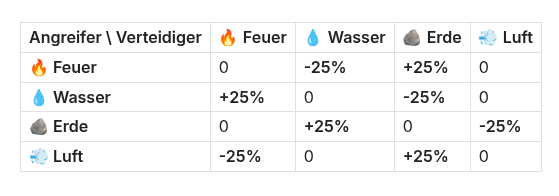
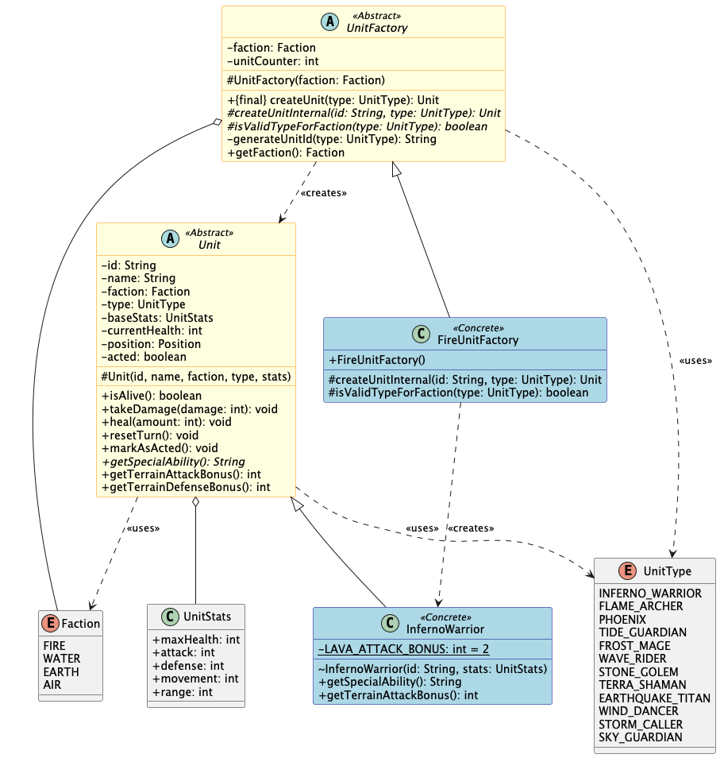
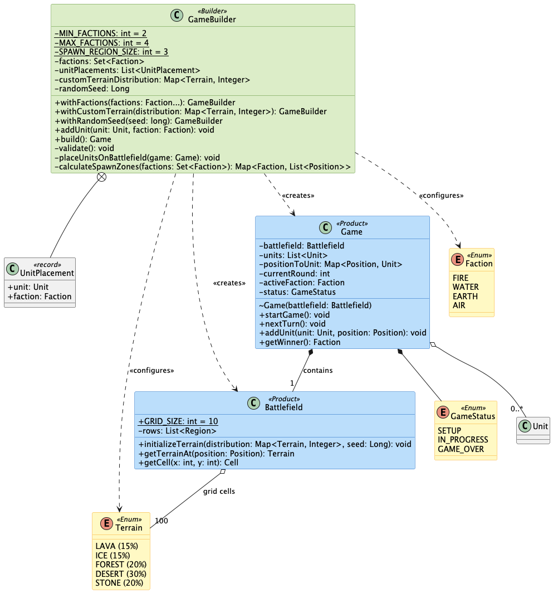
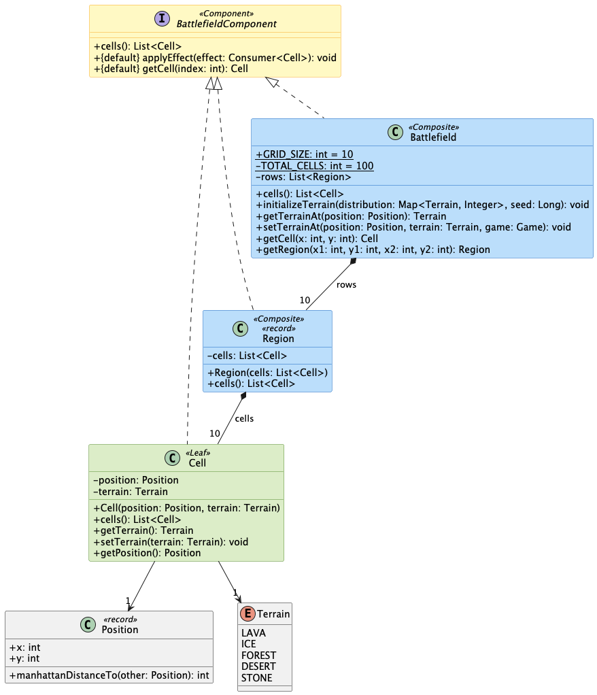
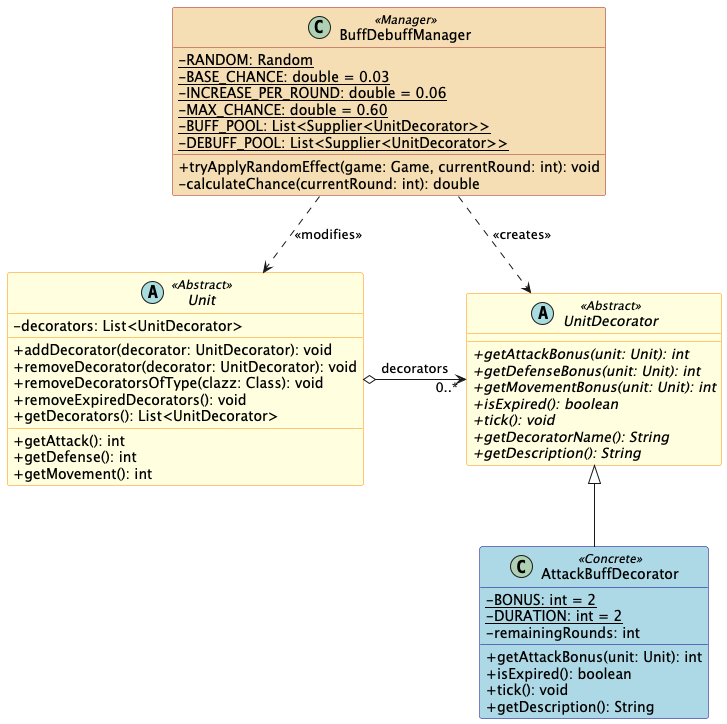
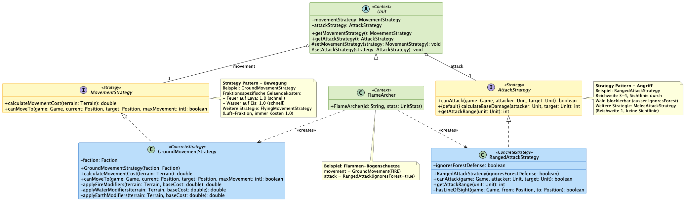
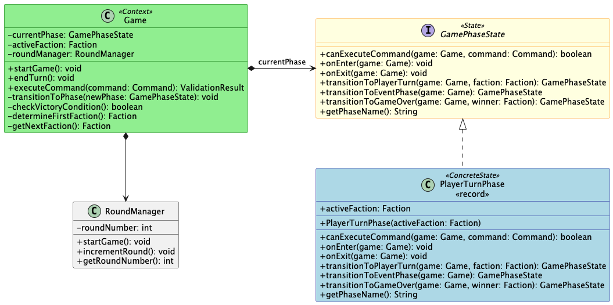

ElementarClash
Rundenbasiertes Strategiespiel mit Design Patterns
Max Meier & Christian Stiens
FH Südwestfalen — Modul: Design Pattern in der OOP
Agenda Christian
- Spielkonzept
- Anforderungen
- Pattern-Übersicht
- Patterns im Detail (10 GoF-Patterns)
- Pattern-Zusammenspiel
- Fazit & Ausblick
- Live-Demo
Was ist ElementarClash? Max
- Rundenbasiertes Strategiespiel für 2–4 Spieler
- 4 elementare Fraktionen: Feuer, Wasser, Erde, Luft
- 10×10 Raster mit 5 Geländetypen
- Jede Fraktion: 3 Einheitentypen (Warrior, Archer, Special)
- Konsolenbasierte Benutzeroberfläche
Fraktionen & Spielfeld Max
Korrelationsmatrix

Anforderungen Max
Funktional
- F1: 4 spielbare Fraktionen
- F2: 10×10 Spielfeld mit Gelände
- F3: Rundenbasierter Ablauf
- F4: Kampfsystem mit Boni/Mali
- F5: Undo/Redo von Zügen
- F6: Konsolen-UI
Nicht-funktional
- Java 21
- Gradle 8.14
- ≥ 8 GoF Design Patterns → 10 umgesetzt
- JUnit 5 Tests
- Clean Code Prinzipien
10 GoF Design Patterns Christian
| Kategorie | Pattern | Einsatzzweck |
|---|
| Erzeugung | Factory Method | Fraktionsspez. Einheitenerstellung |
| Builder | Spielkonfiguration |
| Struktur | Composite | Battlefield-Hierarchie |
| Decorator | Dynamische Buffs/Debuffs |
| Verhalten | Strategy | Bewegung & Angriff |
| State | Spiel- & Unit-Phasen |
| Observer | Event-System |
| Command | Undo/Redo |
| Visitor | Geländeeffekte |
| Chain of Resp. | Schadensberechnung |
Factory Method Christian
Problem: 4 Fraktionen × 3 Einheiten = 12 Klassen — wie einheitlich erzeugen?

Builder Max
Problem: Komplexe Spielkonfiguration mit vielen optionalen Parametern

Composite Max
Problem: Einheitliche Operationen auf Zellen, Regionen und dem gesamten Battlefield

Decorator Christian
Problem: Dynamische Buffs/Debuffs ohne Klassenexplosion

Strategy Max
Problem: Unterschiedliche Bewegungs- und Angriffslogik pro Einheitentyp

State Christian
Problem: Komplexe Zustandsübergänge für Spiel und Einheiten

Observer & Command — UML Max
Command: Dual-Stack History (Undo-Stack & Redo-Stack)
Visitor & Chain of Responsibility Christian
Pattern-Zusammenspiel Max
Erzeugung: Builder erstellt Game mit Composite-Battlefield & Einheiten via Factory Method
Spielablauf: State steuert Phasen → Command kapselt Züge → Strategy bestimmt Bewegung/Angriff
Kampf: Chain of Resp. berechnet Schaden → nutzt Visitor (Gelände) & Decorator (Buffs)
Events: Observer benachrichtigt UI über alle Änderungen → State & Decorator reagieren
Fazit & Ausblick Max
Erreicht
- Alle funktionalen Anforderungen erfüllt
- 10 von 8 geforderten GoF-Patterns
- Saubere Architektur & Testabdeckung
Ausblick
- KI-Gegner (Strategy Pattern)
- Grafische Oberfläche (Observer)
- Netzwerk-Multiplayer
- Weitere Fraktionen & Einheiten
Lessons Learned: Design Patterns fördern Erweiterbarkeit und Wartbarkeit — das Hinzufügen neuer Fraktionen oder Einheiten erfordert minimale Änderungen am bestehenden Code.
Live-Demo Max & Christian
Spielstart: GameBuilder konfiguriert Fraktionen & Battlefield
Runde spielen: Einheit bewegen, angreifen — MoveCommand / AttackCommand
Undo/Redo: Zug rückgängig machen und wiederholen
Kampf: Fraktionsbonus, Geländeeffekt & Buff-Decorator sichtbar machen
Fragen?
Max Meier & Christian Stiens
ElementarClash — FH Südwestfalen